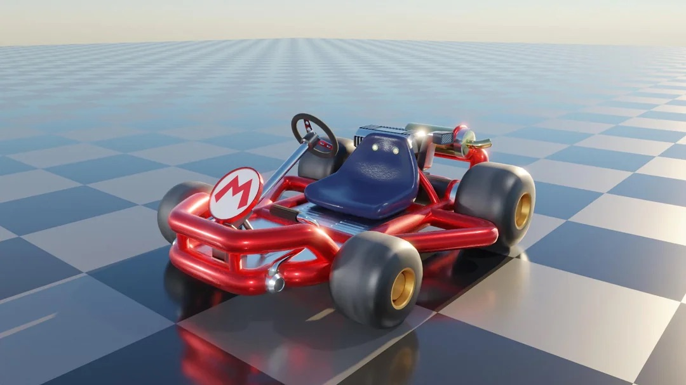

Il t'aidera à gagner des courses, mais franchement il est chiant à mourir - quelle que soit la couleur. Pas fait pour les gens qui aiment prendre des risques et vivre à 300%.
🏎️ Quel Kart prendre avec Yoshi ?

Pour les gens qui ne savent pas conduire mais veulent se sentir doués :
- Châssis : Kart Classique
- Roues : Les petites bleues
- Aile : On s'en fout ça change rien
L'objectif de ce combo, c'est de maximiser l'accélération sur les sorties de virage et la maniabilité; idéal pour les routes escarpées.